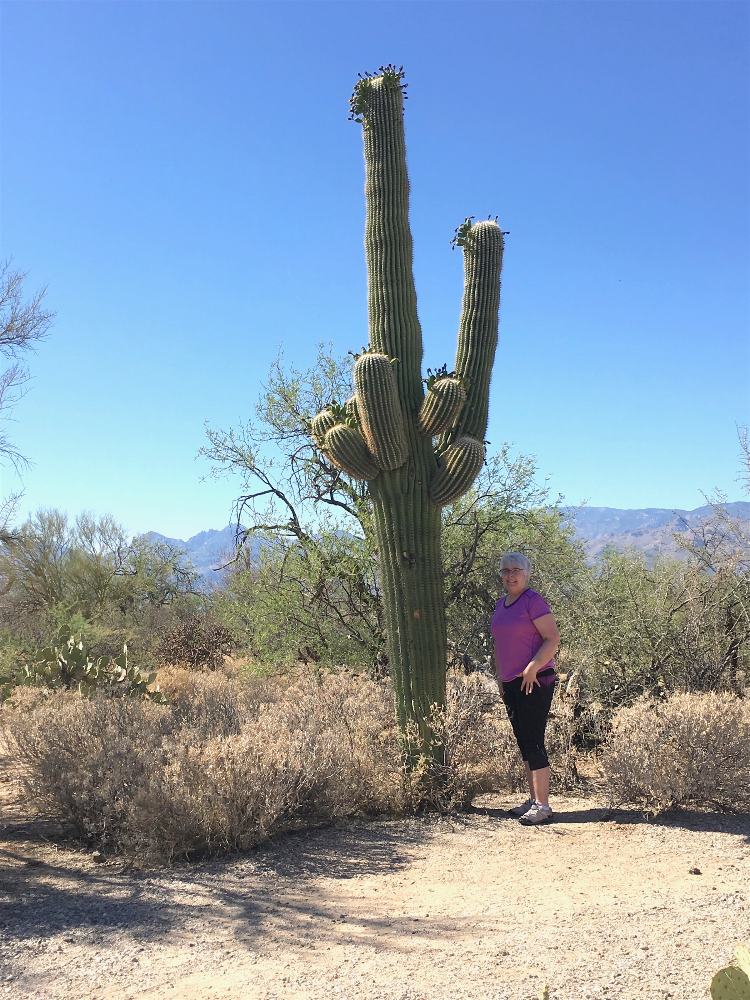
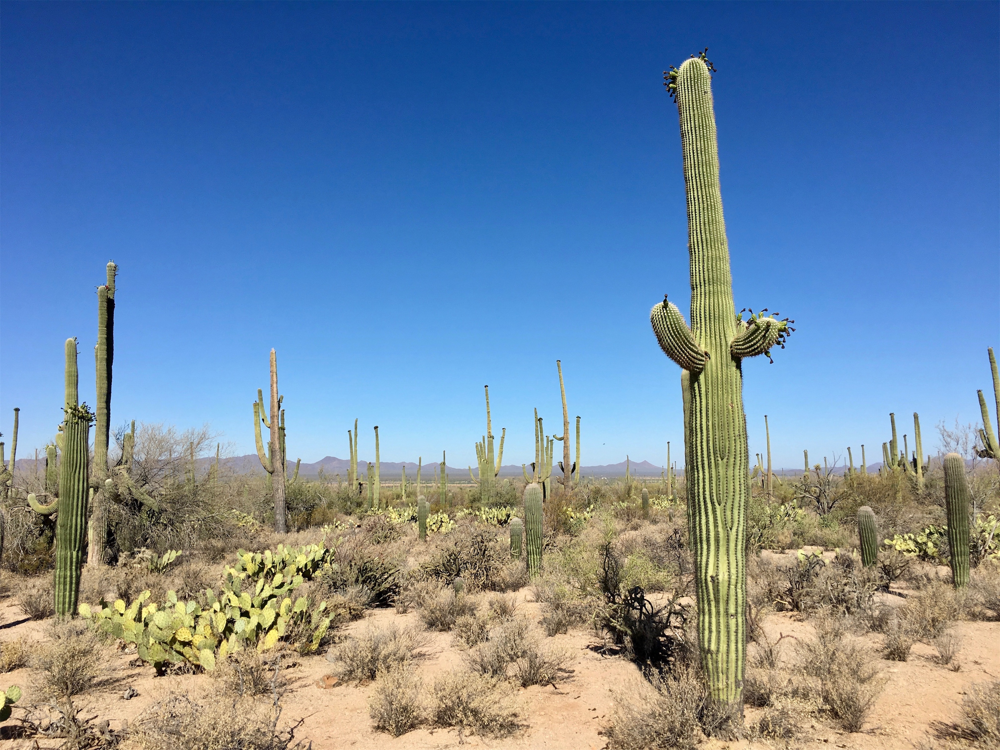
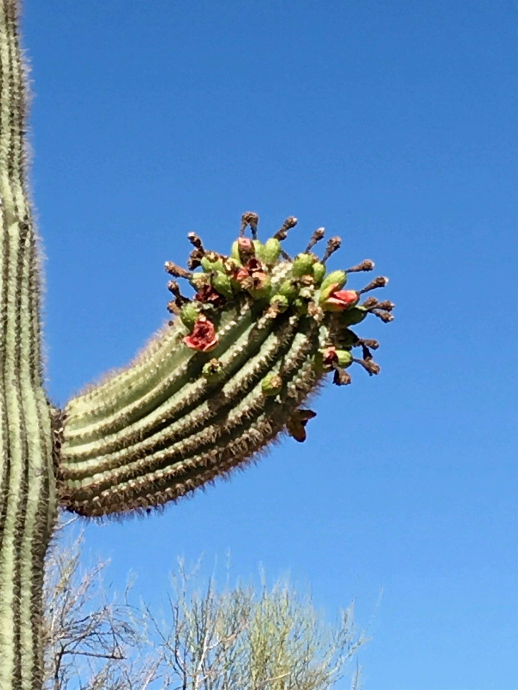
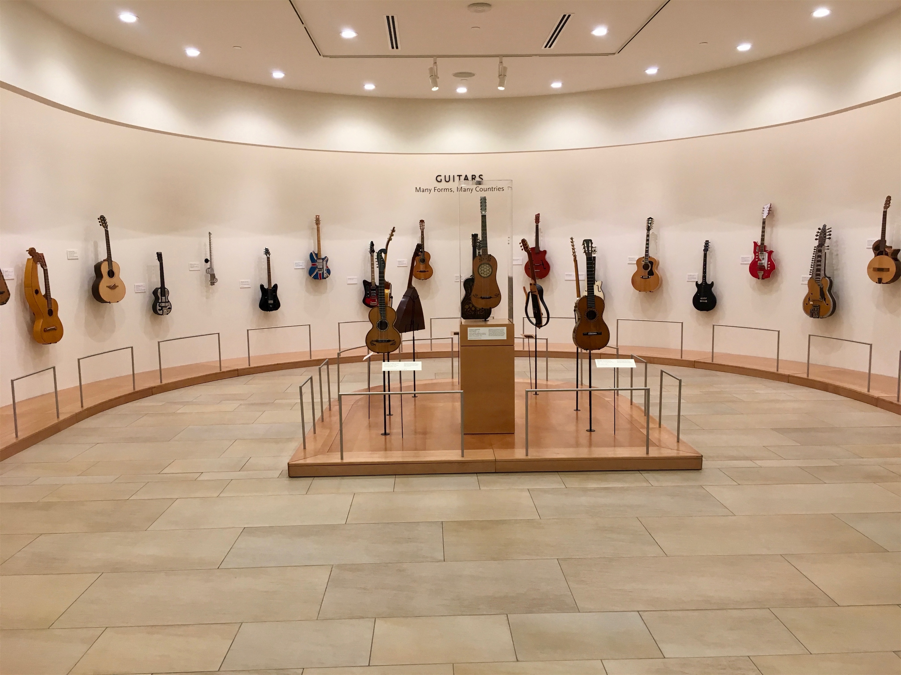
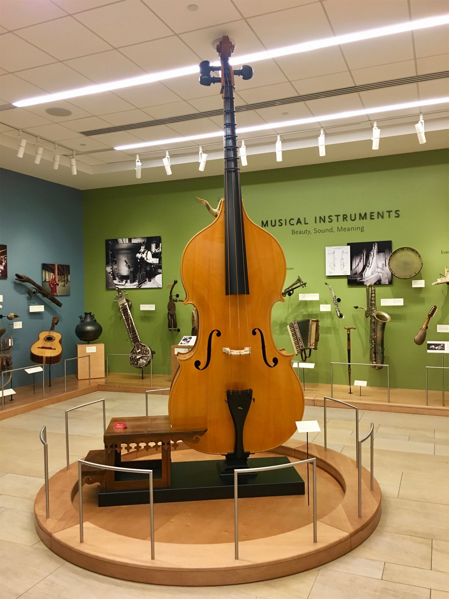
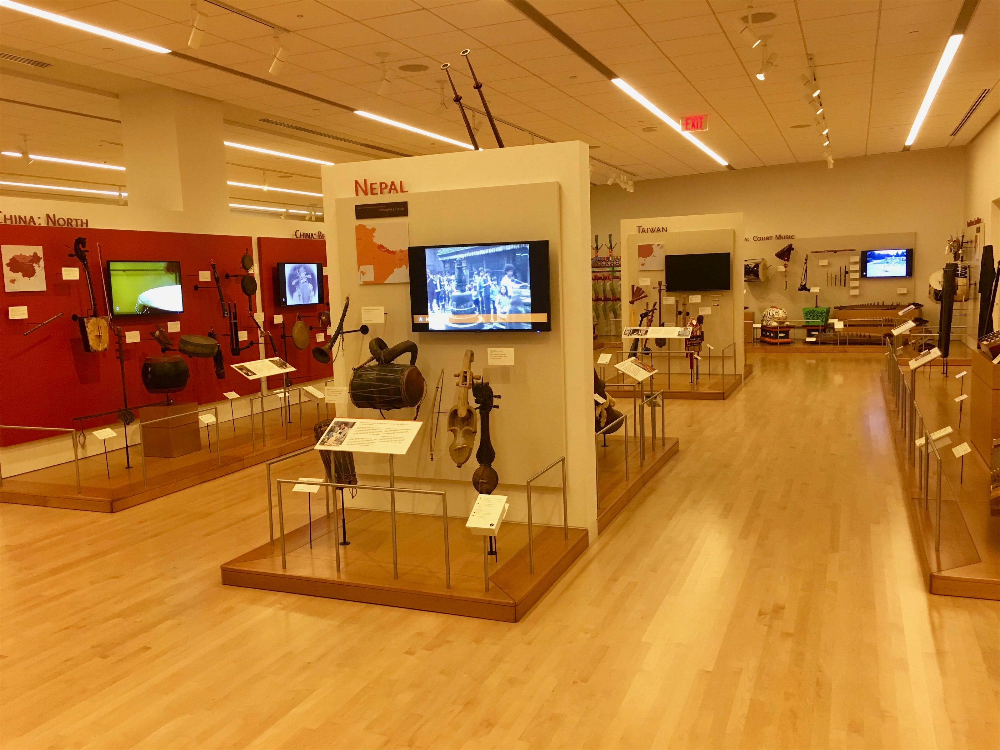
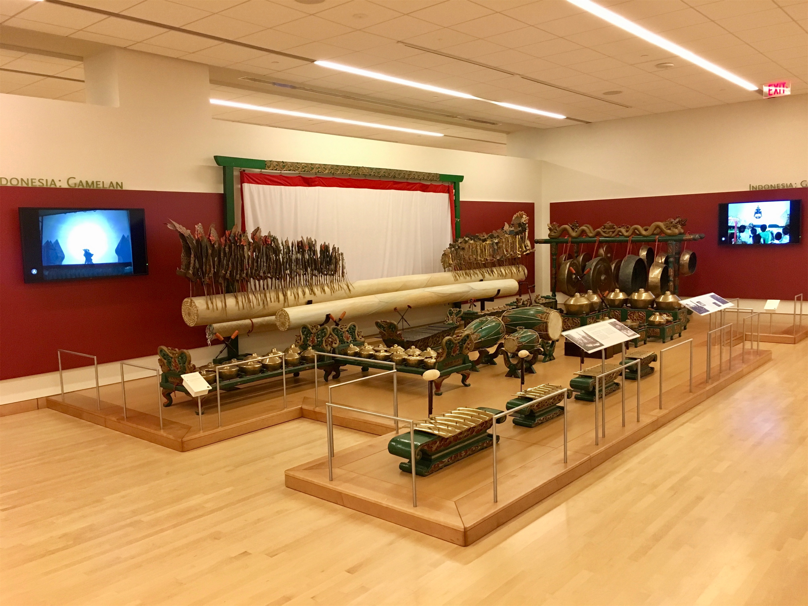
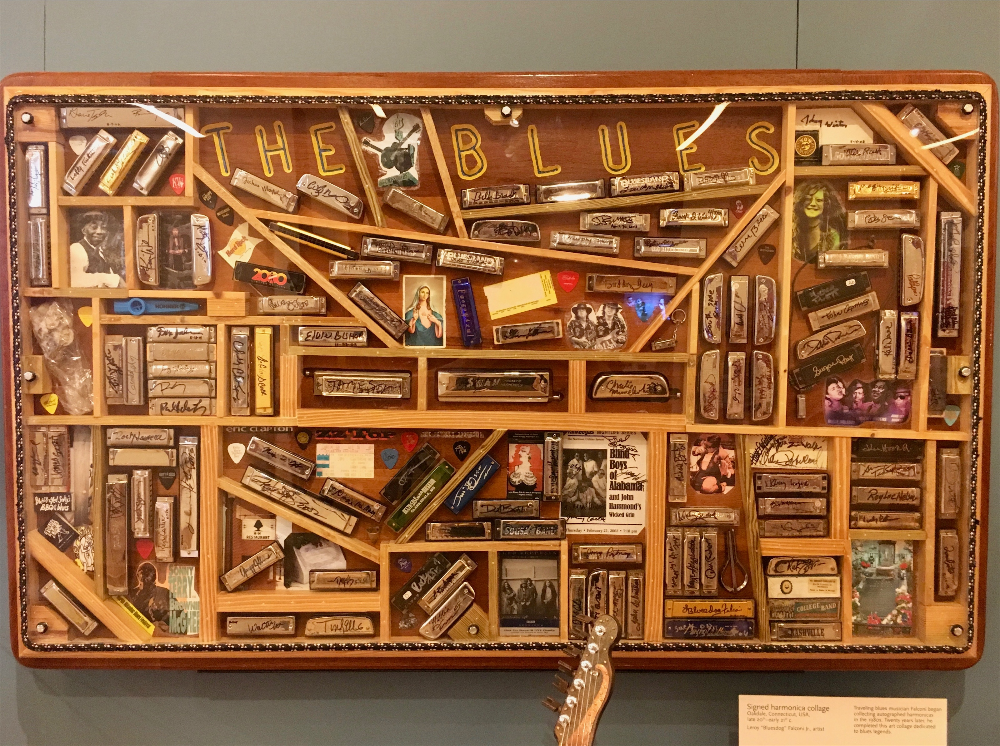

Sunday, Jun 10, 2018, 3:21 PM MST
Saguaro National Park East - Rincon Mountain District, Tucson, AZ, United States
104°F Sunny
104°F Sunny
![]()
6/10 El Paso, TX -> Saguaro NP (east), AZ 315 mi, 5.5 hr
6/10 Saguaro NP (east) Cactus Forest Loop Drive 9 mi, .75 hr
6/10 Saguaro NP (east) -> Tucson, AZ 15 mi, .75 hr
6/11 Tucson, AZ -> Saguaro NP (west) Bajada Scenic Loop 31 mi, 2.25 hr
6/11 Saguaro NP (west) -> Musical Instrument Museum -> Scottsdale, AZ 137 mi, 5 hr
Trip Total: 2,526 mi
Heading west on I-10 from El Paso (border patrol just waved us through the checkpoint this time), we drove through more desert in the last bit of Texas, passing through New Mexico, and arriving in Arizona. After countless highway signs warning of possible dust storms (and what to do), we came across one, but it wasn’t severe enough for us to pull over. We saw dozens of dust devils as we entered the Sonoran desert.
Saguaro NP is famous for (surprise) the giant saguaro cactus forest (the kind that looks like Gumby). The park is odd because there are two halves, one east of Tucson and one west. We drove directly to the eastern visitor center, and were greeted by 104 degrees in full sun. We then drove around a scenic loop, seeing a variety of cacti, including some pretty big saguaro (these can get to 40 ft high, 7 tons, and 200 years old), and many overlooks of cactus forest and the Rincon mountains. After an overnight stay in Tucson, we drove early to another scenic loop, along with a 1/2 mile nature hike in a cool 85 degrees, and finally to the western visitor center.
We headed for Scottsdale, AZ for our overnight stay, and stopped at the incredible Musical Instrument Museum there, one of the best museums we have ever visited. They have almost 5,000 instruments from all over the world, with video and audio of the instruments in action at each station. It was founded by former Target CEO Robert Ulrich, and is right near Mayo Clinic. We had an excellent lunch at a new chain, MidiCi The Neapolitan Pizza Company. There is one coming to Naperville, IL soon.








